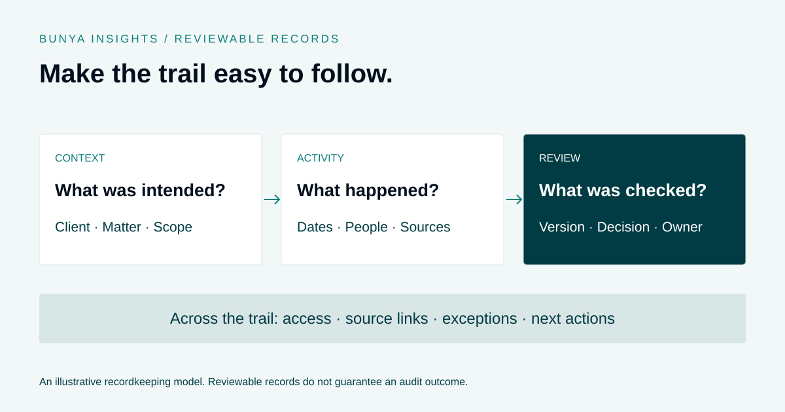

Governance & evidence
Preparing for an Advice File Review: Records and Evidence Checklist
Make records easier to find, understand and review as work happens.

Start with what a reviewer needs to follow
Work with the people responsible for governance to define the relevant records, access and review process. Avoid assuming that collecting more documents makes the history clearer.
A useful record explains the sequence: what was intended, what happened, who acted and what remains unresolved.
Give each item a place
Agree a consistent structure for client documents, matter records, meeting artefacts and approvals. Use names and metadata the team can maintain in daily work.
Where connections are configured, supporting documents can sit with the relevant client or job. Check that links still work for the authorised people who need to review them.
Keep exceptions and approvals visible
Record a change in direction, an outstanding item or a review decision with enough context for another person to understand it. A completion label without supporting information may not explain much.
AI can help organise or summarise material, but a generated summary should not be treated as a substitute for checking the underlying record.
Practise finding the evidence
Periodically sample a completed workflow and ask an authorised reviewer to follow it. Note missing context, inaccessible files and unclear responsibilities, then adjust the process.
Bunya can support connected records, permissions and workflows. The firm still needs to define its requirements, maintain the records and review whether the setup is working as intended.
A worked example: the reviewer can open the file, but not the evidence
Imagine a completed client matter links to meeting notes and a reviewed document. An authorised colleague opens the matter, but a supporting file is only accessible to its original owner. This illustrative example shows why a record needs to be tested from the reviewer’s perspective.
- Start with the matter. Identify the relevant client, scope and sequence of activity. Confirm what the reviewer is authorised to access.
- Follow the source links. Check whether each link opens the intended file and whether the version is the one referred to in the record.
- Record the access gap. Assign it to the appropriate owner. Do not solve a permissions problem by making the file publicly accessible or sharing it more widely than needed.
- Resolve through the agreed process. Correct the location, link or permissions as appropriate, preserving the source and recording relevant changes.
- Retest the trail. Ask the authorised reviewer to follow it again. Note any remaining missing context or unresolved actions.
A folder containing the right documents is only part of the picture. The team also needs to understand which records belong together and who can inspect them.
What should a sample-file review examine?
| Check | Question for the reviewer |
|---|---|
| Context | Can I identify the client, matter and intended scope? |
| Sequence | Do dates and activity records explain what happened in a coherent order? |
| Source access | Can I open the relevant supporting records using my authorised access? |
| Versions | Is it clear which document or output was reviewed? |
| Decisions | Can I see who reviewed the work and what happened next? |
| Exceptions | Are unresolved items visible, with an owner and next action? |
This is an operational checklist, not a complete audit standard or a list of legal recordkeeping requirements. Agree those requirements with the people responsible for your firm’s governance.
A repeatable file-review checklist
- Select a sample using your firm’s agreed review approach, including exceptions rather than only straightforward files.
- Ask an authorised person who did not complete the work to follow the record.
- Open the supporting links and check the referenced versions.
- Distinguish a reviewed source from a draft, summary or later reconstruction.
- Log gaps without disguising them with a completion label.
- Assign each finding an owner and a follow-up date.
- Recheck the correction and look for the same issue in the wider process.
If the same gap appears repeatedly, change the workflow where the record is created. That may mean clearer filing instructions, a better handover or a defined review step.
Use AI to assist navigation, not manufacture evidence
AI may help summarise supplied records or suggest items for investigation. The reviewer still needs to inspect the underlying sources and check that the summary accurately reflects them.
Where an explanation is written later, identify it as a later explanation rather than presenting it as a note made at the time. Keep uncertainties visible. A plausible narrative does not establish that an event occurred or a decision was approved.
In Bunya, connected records, source documents and approval workflows are configured to the agreed scope. Explore the AI and approval approach ↗
Measure how easily the record can be followed
Track time spent locating sources, broken links, missing review context and repeat findings. Compare similar files and include the time required to investigate and correct gaps.
Better organisation can make a review easier, but does not guarantee a particular audit finding or outcome.
Common questions
Is a single document folder enough?
It helps to have an agreed location, but a reviewer also needs context, the relevant versions, access and an explanation of unresolved items. The links between records matter as much as their presence.
Should we copy everything into an audit folder?
Use the method agreed for the review. If a snapshot or export is needed, make its scope and timing clear and avoid losing the relationship to source records. Do not assume a second folder stays synchronised automatically.
Can a system make us audit-ready automatically?
A system can support filing, permissions and review workflows. People still need to define the requirements, verify the record and investigate gaps. No diagram, checklist or software status guarantees compliance.